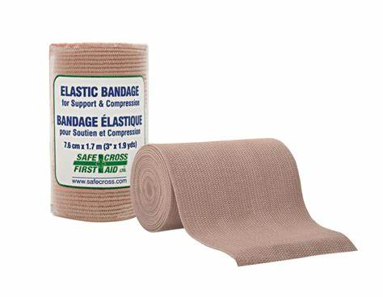

Ankle Sprains: These happen when ligaments in the ankle are stretched or torn, often caused by sudden twisting or rolling — something very likely during an earthquake thanks to unstable ground, debris, or falling objects. Sprains can range from mild to severe, including full ligament tears.
First Aid: Rest the ankle and avoid putting weight on it.
Apply ice or a cold pack wrapped in cloth for 15–20 minutes every 1–2 hours for the first 48 hours to help reduce swelling and pain.
Wrap the ankle with an elastic compression bandage to control swelling. Don’t wrap it too tight — you don’t want to cut off circulation. Elevate the foot above heart level when possible.
Take acetaminophen for pain relief. Avoid heat, alcohol, and massage during the first 48 hours, as they can make swelling worse.
Seek medical attention if you can’t put weight on the ankle, if swelling gets worse, or if you heard a pop when it happened — this could mean a serious tear or fracture.
 Back